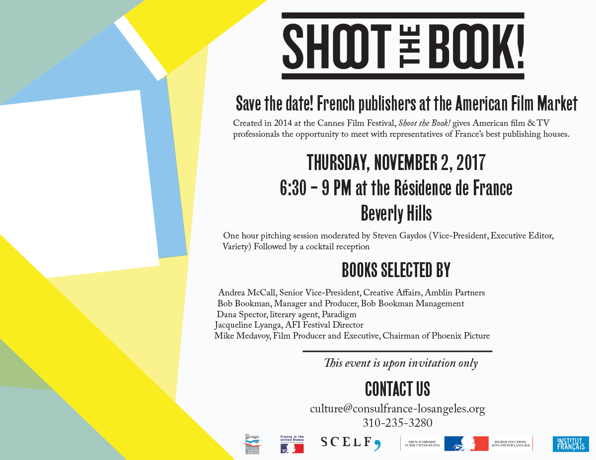
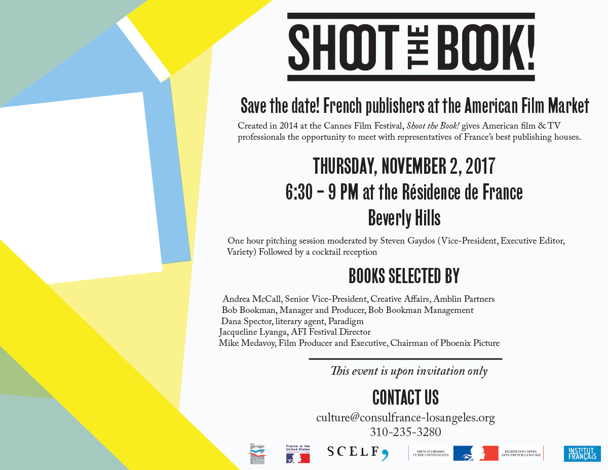

created graphic content for the event Shoot the Book! (a pitching session for French
authors
to pitch their books to filmmakers) including:
a 28 page booklet inspired by the 2017 Cannes' Shoot the Book! visual identity
a 33 x 81 inch kakemono
a 8 x 8 foot step-and-repeat
a Variety magazine half-page advertisement
2 save the dates
2 invitations to the event
and press release design/formatting
This booklet's cover is an homage to books and the Abstract Expressionist movement, particularly Wassily Kandinsky. It plays with the general form of a book, but abstracts the shape and layers different shapes on top of each other using various opacities.
This page provides an introduction to the event and the booklet itself.
This page highlights the members of the jury selecting the pitched books.
This page features a table of contents for the booklet, splitting it into two columns: pitched books and more books. Books with stars near them are books that have been selected by the jury.
This page provides a transition in the booklet from the introduction and table of contents to the pitched books. It plays with the overlapping shapes used in the cover and features a bright yellow color.
This page is one of the many pitched books pages that feature the book's short synopsis, summary, hook, author information, publishing information, genre, and cover artwork.
This page provides a transition in the booklet from the pitched books to the other books in this event. It plays with the overlapping shapes used in the cover and features a green color.

This page features all of the sponsors for this event, a short summary of their work, their logo, and contact information.
A 33' by 81' promotional kakemono was created for the event using a similar visual identity to that of the booklet itself.
This step-and-repeat highlights all the sponsors for the event, such as the Consulate General of France, the Consulate General of France - Los Angeles, the Société Civile des Éditeurs de Langue Française (SCELF), le bureau internationale de l'édition francaise (BIEF), the Institut Français, and the American Film Market & Conferences.
This advertisement, also created for The Los Angeles Times' website, is in a smaller, leaderboard size, to be shown at the top of the computer screen alongside other advertisements. This includes the name of the event, the date and location, and the logo accompanied with graphic lines.
These save the dates follow a similar visual identity to the booklet by playing with the shape of a book and various opacities.
 

These invitations also follow a similar visual identity to the booklet by playing with the shape of a book and various opacities.

This press release uses geometic shapes to convey the theme of the event (books) and follows a similar visual identity to that of the booklet.